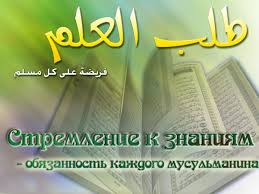

Поиск знаний является священной обязанностью для каждого человека, исповедующего ислам.
Первыми словами, которые услышал Заключительный пророк человечества Мухаммад (мир ему и благословение Аллаха) от Всевышнего, стало приказание читать:
Читай во имя твоего Господа, Который сотворил всё сущее» Коран (сура 96, аят 1)
Этим аятом Аллах призывает всех людей искать знания, работать над собственным интеллектом, стремиться быть грамотными.
- 
- Этот аят напоминает верующему, что он должен на постоянной основе искать знания, поскольку они помогают укреплять его настойчивость в вере и исполнении религиозных обязательств. Свидетельством тому служат аяты из суры «Бакара»: «ОН ДАРУЕТ МУДРОСТЬ, КОМУ ПОЖЕЛАЕТ, И ТОТ, КОМУ ДАРОВАНА МУДРОСТЬ, НАГРАЖДЕН ВЕЛИКИМ БЛАГОМ. ОДНАКО ПОМИНАЮТ НАЗИДАНИЕ ТОЛЬКО ОБЛАДАЮЩИЕ РАЗУМОМ» Коран (2:269)
- Поиск и распространение приносящих общественную пользу знаний обладает свойством, которое позволяет их открывателю пополнять свой список добрых дел и после смерти.
Передается хадис от Муслима: «Когда умирает человек, закрывается книга его деяний. Только три вещи продолжают приносить ему пользу и пополняют список хороших дел:
- садака-джарийа
- праведные дети, которые будут молиться за спасение души родителей,
- знания»